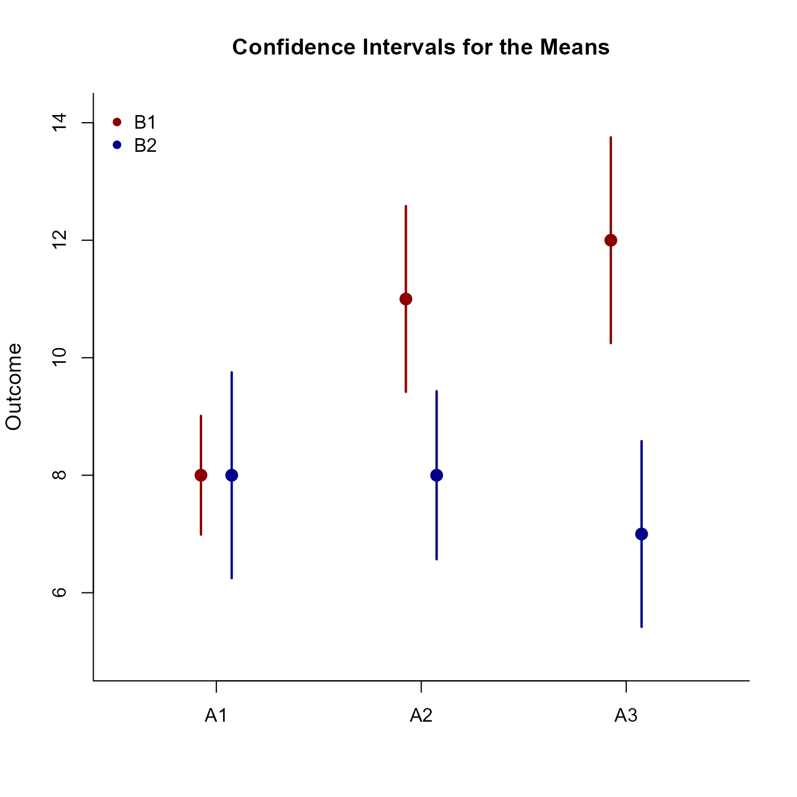

Factorial Summary Traditional
Source:vignettes/FactorialSummaryTraditional.Rmd
FactorialSummaryTraditional.RmdThis page examines a two-factor between-subjects (factorial) design using summary statistics input, focusing on omnibus and simple effects analyses.
Preliminary Tasks
Data Entry
This code inputs the group summaries and creates a single summary table
A1 <- c(N = 10, M = 8.000, SD = 1.414)
A2 <- c(N = 10, M = 11.000, SD = 2.211)
A3 <- c(N = 10, M = 12.000, SD = 2.449)
FactorialMomentsB1 <- construct(A1, A2, A3, class = "bsm")
A1 <- c(N = 10, M = 8.000, SD = 2.449)
A2 <- c(N = 10, M = 8.000, SD = 2.000)
A3 <- c(N = 10, M = 7.000, SD = 2.211)
FactorialMomentsB2 <- construct(A1, A2, A3, class = "bsm")
FactorialMoments <- combine(B1 = FactorialMomentsB1, B2 = FactorialMomentsB2)Summary Statistics
This code confirms the descriptive statistics from the summary tables.
(FactorialMoments) |> describeMoments()$B1
Summary Statistics for the Data
N M SD
A1 10.000 8.000 1.414
A2 10.000 11.000 2.211
A3 10.000 12.000 2.449
$B2
Summary Statistics for the Data
N M SD
A1 10.000 8.000 2.449
A2 10.000 8.000 2.000
A3 10.000 7.000 2.211Plot the means and their confidence intervals for the design as a whole.
(FactorialMoments) |> plotFactorial(col = c("darkred", "darkblue"))
legend("topleft", inset = .01, box.lty = 0, pch = 16, legend = c("B1", "B2"), col = c("darkred", "darkblue"))
Analyses of the Omnibus Effects
The omnibus analysis usually consists of an Analysis of Variance.
Source Table
Get the source table associated with the main effects and the interaction.
(FactorialMoments) |> describeFactorial()
Source Table for the Model
SS df MS
Factor 106.667 1.000 106.667
Blocks 30.000 2.000 15.000
Factor:Blocks 63.333 2.000 31.667
Residual 249.945 54.000 4.629Proportion of Variance Accounted For
Get estimates of the proportion of variance accounted for by each effect (along with their confidence intervals).
(FactorialMoments) |> estimateFactorial()
Proportion of Variance Accounted For by the Model
Est LL UL
Factor 0.299 0.136 0.437
Blocks 0.107 0.000 0.176
Factor:Blocks 0.202 0.014 0.248Significance Tests
Finally, test the various effects for statistical significance.
(FactorialMoments) |> testFactorial()
Hypothesis Tests for the Model
F df1 df2 p
Factor 23.045 1.000 54.000 0.000
Blocks 3.241 2.000 54.000 0.047
Factor:Blocks 6.842 2.000 54.000 0.002Analyses of the Simple Effects
As a follow-up to an Analysis of Variance, it is cusotmary to examine the simple effects (essentially a single-factor ANOVA separately across the levels of another factor).
Source Table
Get the source tables separately for the simple effects.
(FactorialMoments) |> describeEffect()$B1
Source Table for the Model
SS df MS
Between 86.667 2.000 43.333
Within 115.970 27.000 4.295
$B2
Source Table for the Model
SS df MS
Between 6.667 2.000 3.333
Within 133.975 27.000 4.962Proportion of Variance Accounted For
Get an estimate of the proportion of variance account for by the simple effect (and the confidence interval for that estimate).
(FactorialMoments) |> estimateEffect()$B1
Proportion of Variance Accounted For by the Model
Est LL UL
Factor 0.428 0.157 0.569
$B2
Proportion of Variance Accounted For by the Model
Est LL UL
Factor 0.047 0.000 0.173Significance Tests
Finally, test the simple effects for statistical significance.
(FactorialMoments) |> testEffect()$B1
Hypothesis Test for the Model
F df1 df2 p
Factor 10.089 2.000 27.000 0.001
$B2
Hypothesis Test for the Model
F df1 df2 p
Factor 0.672 2.000 27.000 0.519